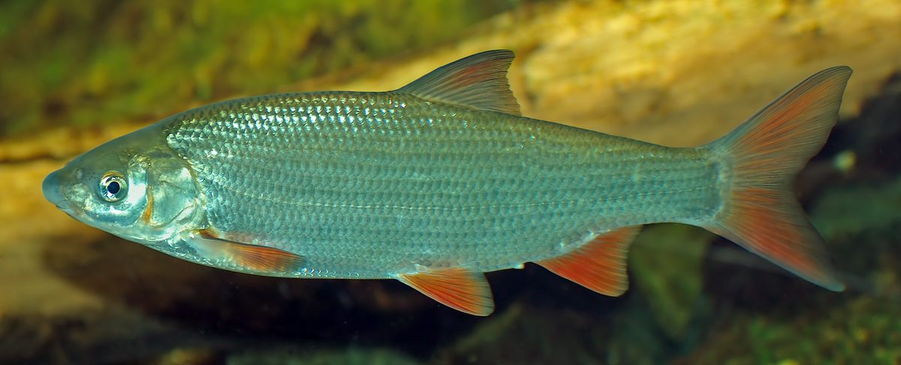

Biologia i rozpoznawanie
Wygląd i rozpoznawanie
Świnka (Chondrostoma nasus) to karpiowata ryba o wydłużonym, walcowatym, silnie umięśnionym ciele przystosowanym do życia w prądzie. Grzbiet ma ciemny, oliwkowo-szary lub niebieskawy, boki jasnosrebrzyste, a brzuch niemal biały; łuska jest średniej wielkości i wyraźna. Najpewniejszą cechą rozpoznawczą jest głowa: pysk położony jest spodnie, a otwór gębowy ma kształt wąskiej, poprzecznej szpary obwiedzionej twardą, rogową wargą — to narzędzie do zeskrobywania glonów z kamieni. Wyraźnie zaznaczony, tępo zakończony ryjek nadaje pyskowi charakterystyczny, „świński” profil, któremu ryba zawdzięcza nazwę. W okresie tarła pojawia się wysyp perłowej wysypki na głowie i płetwach, a płetwy — zwłaszcza brzuszne i odbytowa — nabierają czerwonawego odcienia. Przeciętne świnki mierzą 25–35 cm, okazy powyżej 45 cm i masie zbliżonej do kilograma to już wyjątki.
Środowisko i występowanie w Polsce
Świnka to gatunek reofilny, czyli związany z wartkim nurtem — najlepiej czuje się w krainie brzany i dolnej części krainy lipienia, tam gdzie rzeka jest już szeroka i szybka, ale wciąż chłodna, dobrze natleniona i czysta. Kluczowe jest twarde dno: żwir, kamienie i płyty skalne pokryte warstwą glonów, którymi ryba się żywi. W Polsce świnka występuje w dorzeczu Wisły i Odry — w rzekach podgórskich i nizinnych o zachowanym charakterze, między innymi w Sanie, Dunajcu, Wiśle środkowej, Bugu, Warcie, Odrze czy Nysie Kłodzkiej. Jest rybą wybitnie stadną: przebywa w dużych ławicach, często liczących dziesiątki osobników, które trzymają się razem na żwirowiskach i w rynnach o równym prądzie. Bardzo źle znosi zanieczyszczenia, zamulenie dna i przegradzanie rzek, dlatego jej obecność uznaje się za dobry wskaźnik czystości i drożności cieku.
Biologia i tarło
Świnka odbywa tarło wiosną, zwykle od marca do maja, gdy woda ogrzeje się do około 8–12°C. To gatunek wędrowny w skali rzeki — dojrzałe ryby zbierają się w wielkie stada i podejmują wędrówkę w górę cieku, na płytkie, silnie przepływane żwirowiska. Tam samice składają liczną, kleistą ikrę wprost na kamienie i żwir, a mlecz kilku samców zapładnia ją jednocześnie; w szczycie tarła ławice świnek potrafią wręcz „kotłować” się na bystrzu. Zapłodniona ikra przykleja się do podłoża i inkubuje kilkanaście dni. Świnka dojrzewa płciowo w wieku trzech do czterech lat i dożywa kilkunastu lat, choć większość populacji stanowią ryby młodsze. Rośnie umiarkowanie szybko, a jej liczebność silnie zależy od stanu tarlisk — regulacja koryt, zabudowa hydrotechniczna i zamulanie żwiru to główne przyczyny lokalnego regresu gatunku, mimo że nie jest on objęty ochroną gatunkową.
Żerowanie w sezonach
Podstawą diety świnki są glony porastające kamienie, tak zwany peryfiton, który ryba zeskrobuje twardą wargą, zostawiając charakterystyczne ślady na omszałych płytach. Uzupełnieniem są drobne bezkręgowce denne — larwy ochotek, chruścików i jętek, kiełże oraz detrytus zbierany razem z glonami. Wiosną, po tarle i regeneracji, świnki żerują intensywnie na wypłyconych żwirowiskach ogrzewanych słońcem. Latem i wczesną jesienią stada są najbardziej aktywne — przy ciepłej, ale wciąż natlenionej wodzie ryby przemieszczają się między żwirowiskami a głębszymi rynnami, a żerowanie nasila się o świcie i o zmierzchu. Jesienią świnki schodzą do głębszych, spokojniejszych plos i żerują wolniej, choć potrafią dobrze brać aż do przymrozków. Zimą stada stoją w najgłębszych rynnach i dołach, pobierając pokarm oszczędnie, niemal wyłącznie przy dnie. Jak zawsze aktywność ryb bywa kapryśna — obserwacja wody i stada mówi więcej niż każdy kalendarz.
Przepisy, metody i taktyka
Przepisy krajowe i zasady lokalne
Przepisy krajowe: Wody śródlądowe: wymiar 25 cm; okres ochronny 1 stycznia–15 maja. Źródło: Dz.U. 2023 poz. 1373, § 6–7
Granica okresu ochronnego: jeżeli pierwszy lub ostatni dzień okresu przypada w dzień ustawowo wolny od pracy, okres skraca się o ten dzień (§ 7 ust. 2); wyjątkiem jest całoroczna ochrona jesiotra.
Przed połowem: sprawdź aktualny regulamin i zezwolenie dla konkretnej wody. Wymiar, okres, limit lub zakaz lokalny może być ostrzejszy; brak wartości krajowej nie oznacza zgody na zabranie ryby.
Metody i przynęty
Świnkę łowi się klasycznie metodą spławikową w prądzie oraz gruntowo — feederem lub podlodową bombardą. W wędkarstwie spławikowym sprawdza się długa wędka bolońska lub batowa i płynące zestawy: spławik typu bolo lub przelotka, prowadzone tak, by przynęta sunęła tuż nad dnem zgodnie z nurtem. Świnka ma niewielki, dolny pysk, więc przynęty muszą być drobne — białe robaki, ochotka, kawałek rosówki, ziarno konopi, a także pasty i pellet o delikatnej konsystencji. Feeder z koszyczkiem lub płaskim ciężarkiem dobrze trzymającym dno pozwala łowić dalej i w silniejszym prądzie; koszyk napełnia się drobno mieloną zanętą z dużym udziałem klejących komponentów, by zatrzymać stado. Haczyki dobiera się małe i mocne, w rozmiarach mniej więcej 12–16, do cienkich, lecz wytrzymałych przyponów — świnka w prądzie broni się zaskakująco silnie.
Taktyka łowienia
Klucz do świnki to znalezienie stada i zanętowe utrzymanie go w zasięgu. Ryby stoją tam, gdzie równy, wyraźny prąd przechodzi nad żwirowo-kamienistym dnem — na krawędziach bystrzy, w rynnach za progami i na wejściach do plos, najczęściej na głębokości od pół metra do dwóch metrów. Ponieważ świnka żeruje ławicą, jedno trafione stanowisko potrafi dać serię brań, dlatego warto obławiać je metodycznie, korygując głębokość i tor spływu o kilkadziesiąt centymetrów, zamiast szybko zmieniać miejsce. Zanętę podaje się systematycznie, drobnymi porcjami, tak by pasmo pokarmu ciągnęło się z prądem i sprowadzało rybę pod stanowisko. Świnka bierze delikatnie — spławik często tylko przystaje lub lekko podnurza — więc konieczny jest stały kontakt z zestawem i szybkie, ale miękkie zacięcie. W prądzie ryba mocno wykorzystuje nurt, więc holuj spokojnie i podbieraj z zapasem, chroniąc cienki przypon.
Wartość kulinarna
Mięso świnki jest białe, chude i smaczne, o delikatnym smaku, ceniono je zwłaszcza w kuchni rzecznej południa Polski, gdzie ryba bywała lokalnym przysmakiem. Wadą jest znaczna liczba drobnych ości międzymięśniowych, które zniechęcają część wędkarzy — tradycyjnie radzono sobie z nimi przez nacinanie tuszki gęstymi rzazami przed smażeniem, dzięki czemu ości rozpuszczają się w gorącym tłuszczu. Świnka nadaje się do smażenia, marynowania w occie oraz do wędzenia. Trzeba jednak podkreślić, że lokalnie populacje świnki bywają w regresie z powodu przekształceń rzek, dlatego rozsądne jest samoograniczenie i zabieranie co najwyżej pojedynczych ryb tam, gdzie stado jest liczne i regulamin na to pozwala. W wielu łowiskach o charakterze bystrzowym warto rozważyć zasadę „złów i wypuść”, zwłaszcza wobec większych, dojrzałych osobników istotnych dla rozrodu.
Ciekawostki
Nazwa świnki wywodzi się od charakterystycznego, tępo zakończonego ryjka i spodniego pyska, które nadają głowie „świński” profil; łacińska nazwa Chondrostoma odnosi się natomiast do chrzęstnej, rogowej wargi służącej do skrobania glonów. Świnka to jeden z niewielu krajowych gatunków tak silnie wyspecjalizowanych w zjadaniu peryfitonu — pod tym względem pełni w rzece rolę „skubacza” glonów, podobną do tej, jaką w innych ekosystemach odgrywają ryby zeskrobujące osady. Jako gatunek reofilny i wrażliwy na jakość wody świnka bywa traktowana jako naturalny wskaźnik kondycji rzeki: tam, gdzie liczne stada świnek trą się na żwirowiskach, ekosystem cieku jest zwykle w dobrym stanie. Dawniej masowe wiosenne wędrówki tarłowe świnek były w podgórskich rzekach zjawiskiem tak widowiskowym, że stanowiły element lokalnego kalendarza przyrodniczego.
FAQ — najczęstsze pytania
Kiedy najlepiej łowić świnkę?
Za najlepszy okres uchodzi lato i wczesna jesień, gdy stada świnek są najaktywniejsze, a woda ciepła, lecz wciąż dobrze natleniona — brania nasilają się o świcie i o zmierzchu. Wiosną, po zakończeniu okresu ochronnego, ryby intensywnie żerują na nagrzanych żwirowiskach, a jesienią biorą aż do przymrozków, choć wolniej i w głębszych rynnach. Pamiętaj, że wiosenne tarło jest objęte ochroną, więc terminy zależą od regulaminu okręgu. „Najlepszy sezon” oznacza jedynie statystycznie wyższą aktywność ryb, a nie gwarancję brań — o wyniku decydują stan wody, przejrzystość i precyzja prowadzenia zestawu z prądem.
Na co bierze świnka?
Świnka ma niewielki, dolny pysk przystosowany do skrobania glonów, więc najlepiej reaguje na drobne przynęty prowadzone tuż przy dnie: białe robaki, ochotkę, kawałek rosówki, ziarno konopi, drobny pellet i miękkie pasty. Kluczem jest podanie przynęty w naturalnym dryfie, zgodnie z nurtem, oraz systematyczne zanętowanie drobno mieloną, klejącą zanętą, która zatrzymuje stado w zasięgu. Przy feederze skuteczne bywają koszyczki z dużym udziałem zanęty na bazie sucharów i konopi. Ponieważ świnka bierze delikatnie, liczy się cienki, lecz mocny przypon, mały haczyk i stały kontakt z zestawem — dużych, agresywnych przynęt ta ryba nie atakuje.
Jak odróżnić świnkę od innych karpiowatych?
Najpewniejszą cechą jest głowa: świnka ma spodni, poprzeczny otwór gębowy w kształcie wąskiej szpary z twardą, rogową wargą oraz wyraźny, tępy ryjek — u innych karpiowatych, jak jaź czy kleń, pysk jest końcowy i szeroki. Ciało świnki jest smukłe, walcowate i wyraźnie srebrzyste, z ciemnym grzbietem i często czerwonawymi płetwami brzusznymi oraz odbytową. Od podobnej wielkością płoci odróżnia ją właśnie dolny pysk i brak pomarańczowej tęczówki oka. Prawidłowe rozpoznanie ma znaczenie regulaminowe, bo gatunki różnią się wymiarami i okresami ochronnymi — w razie wątpliwości bezpieczniej rybę wypuścić.
Czy świnka jest smaczna i warto ją zabierać?
Mięso świnki jest białe, chude i smaczne, choć ma dużo drobnych ości, które trzeba przed smażeniem gęsto naciąć, by zmiękły w tłuszczu. Ryba dobrze nadaje się też do wędzenia i marynowania. Z drugiej strony wiele populacji świnki jest lokalnie w regresie z powodu przekształceń i zanieczyszczeń rzek, dlatego rozsądne jest umiarkowanie: zabieraj co najwyżej pojedyncze ryby tam, gdzie stado jest liczne i pozwala na to regulamin, a większe, dojrzałe osobniki raczej wypuszczaj. W łowiskach bystrzowych coraz częściej stosuje się zasadę „złów i wypuść”, która pomaga utrzymać zdrowe, liczne stada świnek na przyszłe sezony.
Źródła i weryfikacja
Prawo: punktem wyjścia dla krajowych wymiarów i okresów ochronnych w powierzchniowych wodach śródlądowych jest § 6–7 rozporządzenia Dz.U. 2023 poz. 1373 (źródło zweryfikowano 2026-07-20). Przed połowem sprawdź zezwolenie, regulamin i komunikaty gospodarza tej wody; mogą wprowadzać dodatkowe, ostrzejsze warunki, lecz nie zastępują aktu. Praktyka redakcyjna: opis metod i taktyki ma charakter edukacyjny.
Tożsamość biologiczna i źródła
Nazwa łacińska: Chondrostoma nasus. Grupa atlasu: łososiowate i inne. Alias: nase.
Źródła: FishBase: Chondrostoma nasusGBIF: Chondrostoma nasusIUCN Red List: Chondrostoma nasus. Dostęp: 2026-07-17. Zakres: tożsamość taksonomiczna i nazewnictwo oraz, gdy wskazano, ocena ochrony; bez potwierdzenia lokalnego występowania, stanu łowiska ani zasad połowu.
Jak odróżnić: Brzana i Świnka
| Cecha | Brzana | Świnka |
|---|---|---|
| Okolica pyska | Dwie pary wąsików i gruba dolna warga z poduszeczką. | Bez wąsików; dolna warga tworzy twardą, rogową krawędź. |
| Płetwy | Barwa nie jest cechą rozstrzygającą. | Płetwy piersiowe, brzuszne, odbytowa i ogonowa mogą być czerwone. |
Źródła cech: FishBase: Barbus barbus · FishBase: Chondrostoma nasus. Dostęp: 2026-07-17.
Granica oznaczenia: Wąsiki są mocniejszą cechą niż kolor, który zależy od środowiska i kondycji ryby. Liczenie promieni lub łusek wymaga ostrego obrazu i praktyki; cechy barwy i proporcji zależą od wieku, płci, populacji i ubarwienia godowego.